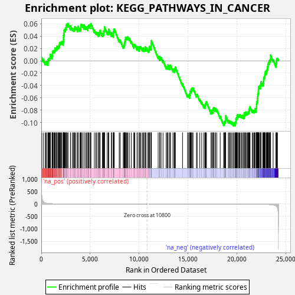
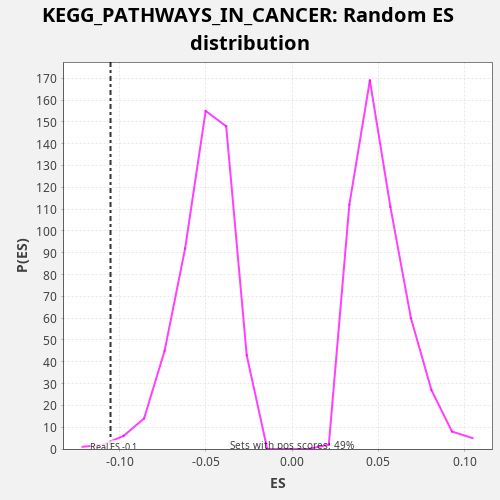

| Dataset | LabCL |
| Phenotype | NoPhenotypeAvailable |
| Upregulated in class | na_neg |
| GeneSet | KEGG_PATHWAYS_IN_CANCER |
| Enrichment Score (ES) | -0.10532685 |
| Normalized Enrichment Score (NES) | -2.062255 |
| Nominal p-value | 0.0059288535 |
| FDR q-value | 0.058595445 |
| FWER p-Value | 0.253 |

| SYMBOL | RANK IN GENE LIST | RANK METRIC SCORE | RUNNING ES | CORE ENRICHMENT | |
|---|---|---|---|---|---|
| 1 | IL6 | 17 | 562.504 | 0.0027 | No |
| 2 | STAT1 | 41 | 328.402 | 0.0052 | No |
| 3 | FZD4 | 199 | 96.193 | 0.0021 | No |
| 4 | TGFB2 | 397 | 41.227 | -0.0027 | No |
| 5 | CASP3 | 482 | 32.811 | -0.0027 | No |
| 6 | FZD1 | 528 | 28.735 | -0.0011 | No |
| 7 | PDGFA | 673 | 20.858 | -0.0037 | No |
| 8 | NFKB2 | 691 | 20.059 | -0.0010 | No |
| 9 | HIF1A | 699 | 19.833 | 0.0022 | No |
| 10 | VEGFC | 759 | 18.183 | 0.0032 | No |
| 11 | SKP2 | 818 | 16.231 | 0.0042 | No |
| 12 | E2F1 | 888 | 14.212 | 0.0048 | No |
| 13 | FZD2 | 912 | 13.739 | 0.0073 | No |
| 14 | CASP8 | 924 | 13.595 | 0.0102 | No |
| 15 | LAMB2 | 1101 | 10.444 | 0.0063 | No |
| 16 | VEGFB | 1105 | 10.375 | 0.0097 | No |
| 17 | CTBP1 | 1157 | 9.474 | 0.0110 | No |
| 18 | PML | 1159 | 9.463 | 0.0144 | No |
| 19 | CREBBP | 1199 | 8.831 | 0.0162 | No |
| 20 | TRAF2 | 1280 | 7.745 | 0.0163 | No |
| 21 | AXIN1 | 1360 | 6.997 | 0.0165 | No |
| 22 | HSP90B1 | 1398 | 6.651 | 0.0184 | No |
| 23 | GRB2 | 1426 | 6.358 | 0.0207 | No |
| 24 | PDGFRB | 1520 | 5.708 | 0.0203 | No |
| 25 | BMP4 | 1594 | 5.181 | 0.0207 | No |
| 26 | NFKBIA | 1606 | 5.092 | 0.0237 | No |
| 27 | FH | 1703 | 4.426 | 0.0231 | No |
| 28 | ITGAV | 1780 | 4.010 | 0.0234 | No |
| 29 | WNT3 | 1820 | 3.839 | 0.0252 | No |
| 30 | DVL2 | 1863 | 3.608 | 0.0269 | No |
| 31 | FGF12 | 1891 | 3.484 | 0.0292 | No |
| 32 | PIK3R1 | 1974 | 3.163 | 0.0292 | No |
| 33 | STAT3 | 2034 | 2.963 | 0.0302 | No |
| 34 | CXCL8 | 2096 | 2.772 | 0.0311 | No |
| 35 | IKBKB | 2234 | 2.419 | 0.0288 | No |
| 36 | LAMC1 | 2242 | 2.407 | 0.0320 | No |
| 37 | MAX | 2267 | 2.344 | 0.0344 | No |
| 38 | BCL2L1 | 2270 | 2.340 | 0.0378 | No |
| 39 | WNT6 | 2273 | 2.330 | 0.0412 | No |
| 40 | WNT11 | 2300 | 2.273 | 0.0435 | No |
| 41 | RELA | 2329 | 2.207 | 0.0458 | No |
| 42 | CBLB | 2333 | 2.203 | 0.0491 | No |
| 43 | STK4 | 2383 | 2.107 | 0.0505 | No |
| 44 | PIK3CD | 2459 | 1.971 | 0.0509 | No |
| 45 | TGFBR1 | 2481 | 1.931 | 0.0534 | No |
| 46 | CDK4 | 2554 | 1.811 | 0.0539 | No |
| 47 | PLCG1 | 2563 | 1.800 | 0.0570 | No |
| 48 | WNT5A | 2590 | 1.752 | 0.0594 | No |
| 49 | BCL2 | 2705 | 1.557 | 0.0580 | No |
| 50 | AKT3 | 2729 | 1.513 | 0.0605 | No |
| 51 | TRAF5 | 2976 | 1.215 | 0.0537 | No |
| 52 | NKX3-1 | 2987 | 1.208 | 0.0567 | No |
| 53 | FADD | 3169 | 1.041 | 0.0526 | No |
| 54 | BAD | 3283 | 0.949 | 0.0514 | No |
| 55 | IKBKG | 3372 | 0.896 | 0.0511 | No |
| 56 | TPM3 | 3388 | 0.883 | 0.0540 | No |
| 57 | CDKN2B | 3438 | 0.855 | 0.0554 | No |
| 58 | ARAF | 3551 | 0.789 | 0.0541 | No |
| 59 | FN1 | 3713 | 0.712 | 0.0509 | No |
| 60 | COL4A2 | 3744 | 0.698 | 0.0531 | No |
| 61 | RARA | 3763 | 0.688 | 0.0558 | No |
| 62 | HSP90AB1 | 3944 | 0.602 | 0.0517 | No |
| 63 | PLD1 | 4028 | 0.567 | 0.0517 | No |
| 64 | CYCS | 4046 | 0.558 | 0.0544 | No |
| 65 | NFKB1 | 4047 | 0.557 | 0.0579 | No |
| 66 | ITGA2B | 4096 | 0.538 | 0.0593 | No |
| 67 | BAX | 4216 | 0.491 | 0.0578 | No |
| 68 | VEGFD | 4372 | 0.438 | 0.0548 | No |
| 69 | WNT4 | 4379 | 0.436 | 0.0580 | No |
| 70 | TRAF1 | 4545 | 0.393 | 0.0545 | No |
| 71 | NRAS | 4625 | 0.370 | 0.0547 | No |
| 72 | PPARG | 4763 | 0.338 | 0.0524 | No |
| 73 | PLCG2 | 4773 | 0.336 | 0.0555 | No |
| 74 | RB1 | 4822 | 0.325 | 0.0569 | No |
| 75 | FGF2 | 4882 | 0.311 | 0.0579 | No |
| 76 | FZD6 | 5014 | 0.280 | 0.0559 | No |
| 77 | COL4A1 | 5019 | 0.279 | 0.0592 | No |
| 78 | MAP2K2 | 5076 | 0.267 | 0.0603 | No |
| 79 | BRCA2 | 5426 | 0.207 | 0.0492 | No |
| 80 | CDKN2A | 5576 | 0.189 | 0.0464 | No |
| 81 | RAC1 | 5673 | 0.178 | 0.0458 | No |
| 82 | RHOA | 5821 | 0.160 | 0.0431 | No |
| 83 | MTOR | 5845 | 0.158 | 0.0456 | No |
| 84 | FZD7 | 5966 | 0.146 | 0.0441 | No |
| 85 | RASSF1 | 5981 | 0.144 | 0.0469 | No |
| 86 | EGLN2 | 6010 | 0.141 | 0.0492 | No |
| 87 | PIAS2 | 6242 | 0.121 | 0.0430 | No |
| 88 | PRKCG | 6317 | 0.115 | 0.0434 | No |
| 89 | RAD51 | 6367 | 0.111 | 0.0448 | No |
| 90 | MSH3 | 6372 | 0.110 | 0.0481 | No |
| 91 | GSK3B | 6434 | 0.105 | 0.0490 | No |
| 92 | CCNE1 | 6457 | 0.104 | 0.0515 | No |
| 93 | DVL3 | 6459 | 0.103 | 0.0549 | No |
| 94 | RAC2 | 6741 | 0.084 | 0.0466 | No |
| 95 | FLT3 | 6851 | 0.078 | 0.0455 | No |
| 96 | HSP90AA1 | 6878 | 0.077 | 0.0479 | No |
| 97 | CRK | 6884 | 0.077 | 0.0511 | No |
| 98 | NCOA4 | 7167 | 0.062 | 0.0428 | No |
| 99 | BID | 7189 | 0.061 | 0.0454 | No |
| 100 | SMAD4 | 7362 | 0.053 | 0.0416 | No |
| 101 | CKS1B | 7365 | 0.053 | 0.0450 | No |
| 102 | CCNE2 | 7389 | 0.052 | 0.0475 | No |
| 103 | CUL2 | 7415 | 0.051 | 0.0499 | No |
| 104 | DAPK1 | 7461 | 0.049 | 0.0514 | No |
| 105 | TRAF6 | 7964 | 0.031 | 0.0339 | No |
| 106 | CDK2 | 8068 | 0.028 | 0.0331 | No |
| 107 | RUNX1T1 | 8377 | 0.021 | 0.0237 | No |
| 108 | FZD8 | 8449 | 0.019 | 0.0242 | No |
| 109 | ITGA3 | 8470 | 0.019 | 0.0268 | No |
| 110 | CTNNA3 | 8512 | 0.018 | 0.0285 | No |
| 111 | FGF1 | 8540 | 0.018 | 0.0308 | No |
| 112 | PPARD | 8562 | 0.017 | 0.0334 | No |
| 113 | FGFR1 | 8604 | 0.016 | 0.0351 | No |
| 114 | PIAS4 | 8622 | 0.016 | 0.0379 | No |
| 115 | EGLN1 | 8710 | 0.015 | 0.0377 | No |
| 116 | HRAS | 8794 | 0.013 | 0.0377 | No |
| 117 | AKT1 | 8851 | 0.012 | 0.0388 | No |
| 118 | TRAF4 | 8998 | 0.010 | 0.0361 | No |
| 119 | CCND1 | 9193 | 0.007 | 0.0315 | No |
| 120 | LAMA4 | 9465 | 0.005 | 0.0236 | No |
| 121 | TPR | 9481 | 0.005 | 0.0265 | No |
| 122 | PIK3CA | 9562 | 0.004 | 0.0266 | No |
| 123 | KRAS | 9789 | 0.003 | 0.0206 | No |
| 124 | VHL | 9815 | 0.002 | 0.0230 | No |
| 125 | MAPK9 | 9989 | 0.002 | 0.0192 | No |
| 126 | SOS2 | 9992 | 0.002 | 0.0226 | No |
| 127 | TFG | 10074 | 0.001 | 0.0226 | No |
| 128 | FZD9 | 10157 | 0.001 | 0.0227 | No |
| 129 | DAPK2 | 10312 | 0.001 | 0.0197 | No |
| 130 | HDAC1 | 10417 | 0.000 | 0.0188 | No |
| 131 | PDGFB | 10448 | 0.000 | 0.0210 | No |
| 132 | MSH2 | 10586 | 0.000 | 0.0187 | No |
| 133 | AXIN2 | 10636 | 0.000 | 0.0201 | No |
| 134 | AKT2 | 10660 | 0.000 | 0.0226 | No |
| 135 | ARNT2 | 10815 | 0.000 | 0.0196 | No |
| 136 | RARB | 10955 | 0.000 | 0.0173 | No |
| 137 | STAT5A | 11020 | 0.000 | 0.0180 | No |
| 138 | FOXO1 | 11038 | -0.000 | 0.0208 | No |
| 139 | TGFB3 | 11061 | -0.000 | 0.0233 | No |
| 140 | XIAP | 11208 | -0.000 | 0.0207 | No |
| 141 | CSF3R | 11220 | -0.000 | 0.0237 | No |
| 142 | E2F3 | 11227 | -0.000 | 0.0269 | No |
| 143 | RXRB | 11237 | -0.000 | 0.0299 | No |
| 144 | CHUK | 11254 | -0.000 | 0.0327 | No |
| 145 | FGF9 | 11948 | -0.002 | 0.0072 | No |
| 146 | HHIP | 12105 | -0.003 | 0.0042 | No |
| 147 | SMAD2 | 12122 | -0.003 | 0.0069 | No |
| 148 | VEGFA | 12249 | -0.004 | 0.0051 | No |
| 149 | GLI1 | 12446 | -0.005 | 0.0004 | No |
| 150 | CDKN1B | 12766 | -0.008 | -0.0095 | No |
| 151 | BIRC5 | 12860 | -0.009 | -0.0099 | No |
| 152 | MLH1 | 12950 | -0.010 | -0.0102 | No |
| 153 | FZD5 | 12951 | -0.010 | -0.0067 | No |
| 154 | APC | 13133 | -0.013 | -0.0108 | No |
| 155 | MAP2K1 | 13137 | -0.013 | -0.0075 | No |
| 156 | DAPK3 | 13210 | -0.014 | -0.0071 | No |
| 157 | RET | 13460 | -0.018 | -0.0140 | No |
| 158 | MECOM | 13583 | -0.020 | -0.0157 | No |
| 159 | COL4A4 | 13610 | -0.021 | -0.0133 | No |
| 160 | KIT | 13671 | -0.022 | -0.0124 | No |
| 161 | PTEN | 13702 | -0.022 | -0.0102 | No |
| 162 | FGF18 | 14439 | -0.041 | -0.0374 | No |
| 163 | SMAD3 | 14958 | -0.060 | -0.0556 | No |
| 164 | CDK6 | 15034 | -0.063 | -0.0553 | No |
| 165 | NTRK1 | 15160 | -0.068 | -0.0571 | No |
| 166 | CCNA1 | 15165 | -0.068 | -0.0538 | No |
| 167 | NOS2 | 15215 | -0.070 | -0.0524 | No |
| 168 | ERBB2 | 15216 | -0.070 | -0.0489 | No |
| 169 | FGF17 | 15293 | -0.073 | -0.0487 | No |
| 170 | SOS1 | 15316 | -0.075 | -0.0461 | No |
| 171 | PIK3R2 | 15391 | -0.078 | -0.0458 | No |
| 172 | PIAS1 | 15429 | -0.080 | -0.0439 | No |
| 173 | EGF | 15516 | -0.084 | -0.0440 | No |
| 174 | CTNNB1 | 15868 | -0.103 | -0.0552 | No |
| 175 | CSF1R | 15932 | -0.106 | -0.0544 | No |
| 176 | MAPK1 | 16205 | -0.124 | -0.0623 | No |
| 177 | FGFR3 | 16403 | -0.137 | -0.0671 | No |
| 178 | HDAC2 | 16621 | -0.154 | -0.0727 | No |
| 179 | CTNNA1 | 16730 | -0.162 | -0.0737 | No |
| 180 | EPAS1 | 16753 | -0.165 | -0.0712 | No |
| 181 | ETS1 | 16793 | -0.167 | -0.0694 | No |
| 182 | GLI2 | 16837 | -0.171 | -0.0677 | No |
| 183 | PAX8 | 16883 | -0.176 | -0.0662 | No |
| 184 | STK36 | 17363 | -0.226 | -0.0827 | No |
| 185 | TRAF3 | 17381 | -0.228 | -0.0800 | No |
| 186 | LEF1 | 17509 | -0.244 | -0.0818 | No |
| 187 | APPL1 | 17559 | -0.249 | -0.0804 | No |
| 188 | MDM2 | 17572 | -0.251 | -0.0775 | No |
| 189 | MAPK3 | 17616 | -0.256 | -0.0758 | No |
| 190 | RALGDS | 17755 | -0.274 | -0.0781 | No |
| 191 | PTCH1 | 17800 | -0.281 | -0.0765 | No |
| 192 | PRKCA | 17946 | -0.300 | -0.0791 | No |
| 193 | WNT10A | 18289 | -0.356 | -0.0900 | No |
| 194 | FZD10 | 18644 | -0.424 | -0.1013 | No |
| 195 | E2F2 | 18702 | -0.436 | -0.1002 | No |
| 196 | RALA | 18740 | -0.445 | -0.0983 | No |
| 197 | SUFU | 18804 | -0.459 | -0.0975 | No |
| 198 | ABL1 | 18825 | -0.463 | -0.0949 | No |
| 199 | TGFBR2 | 18847 | -0.467 | -0.0923 | No |
| 200 | MYC | 18855 | -0.470 | -0.0892 | No |
| 201 | BIRC3 | 19124 | -0.542 | -0.0969 | No |
| 202 | RBX1 | 19213 | -0.569 | -0.0971 | No |
| 203 | BRAF | 19312 | -0.595 | -0.0978 | No |
| 204 | ARNT | 19413 | -0.629 | -0.0985 | No |
| 205 | MSH6 | 19528 | -0.674 | -0.0998 | No |
| 206 | PDGFRA | 19661 | -0.719 | -0.1019 | Yes |
| 207 | BMP2 | 19710 | -0.741 | -0.1004 | Yes |
| 208 | IGF1R | 19826 | -0.790 | -0.1018 | Yes |
| 209 | MITF | 19849 | -0.800 | -0.0993 | Yes |
| 210 | FGF5 | 19896 | -0.822 | -0.0977 | Yes |
| 211 | PRKCB | 19900 | -0.824 | -0.0944 | Yes |
| 212 | APC2 | 19938 | -0.839 | -0.0925 | Yes |
| 213 | LAMA5 | 19998 | -0.862 | -0.0915 | Yes |
| 214 | PIK3CG | 20022 | -0.871 | -0.0890 | Yes |
| 215 | CRKL | 20067 | -0.893 | -0.0874 | Yes |
| 216 | CDC42 | 20171 | -0.940 | -0.0883 | Yes |
| 217 | RAF1 | 20241 | -0.971 | -0.0877 | Yes |
| 218 | EP300 | 20314 | -1.013 | -0.0873 | Yes |
| 219 | STAT5B | 20439 | -1.085 | -0.0890 | Yes |
| 220 | WNT7A | 20506 | -1.134 | -0.0883 | Yes |
| 221 | LAMA2 | 20622 | -1.211 | -0.0896 | Yes |
| 222 | WNT9A | 20720 | -1.272 | -0.0902 | Yes |
| 223 | CTBP2 | 20730 | -1.279 | -0.0872 | Yes |
| 224 | WNT5B | 20746 | -1.292 | -0.0844 | Yes |
| 225 | JUN | 20862 | -1.388 | -0.0857 | Yes |
| 226 | LAMB1 | 20878 | -1.400 | -0.0829 | Yes |
| 227 | CBL | 20985 | -1.511 | -0.0839 | Yes |
| 228 | RUNX1 | 21072 | -1.607 | -0.0840 | Yes |
| 229 | BIRC2 | 21131 | -1.663 | -0.0830 | Yes |
| 230 | LAMB4 | 21198 | -1.739 | -0.0823 | Yes |
| 231 | RASSF5 | 21233 | -1.795 | -0.0803 | Yes |
| 232 | CASP9 | 21260 | -1.842 | -0.0779 | Yes |
| 233 | RXRA | 21310 | -1.890 | -0.0765 | Yes |
| 234 | WNT7B | 21343 | -1.928 | -0.0744 | Yes |
| 235 | WNT10B | 21569 | -2.247 | -0.0803 | Yes |
| 236 | TCF7L1 | 21650 | -2.397 | -0.0802 | Yes |
| 237 | LAMA3 | 21748 | -2.579 | -0.0808 | Yes |
| 238 | DVL1 | 21817 | -2.731 | -0.0802 | Yes |
| 239 | CDH1 | 21839 | -2.794 | -0.0776 | Yes |
| 240 | MMP1 | 21971 | -3.083 | -0.0797 | Yes |
| 241 | ITGB1 | 21974 | -3.085 | -0.0763 | Yes |
| 242 | PIK3R3 | 22003 | -3.185 | -0.0740 | Yes |
| 243 | MMP2 | 22009 | -3.213 | -0.0708 | Yes |
| 244 | BCR | 22020 | -3.250 | -0.0677 | Yes |
| 245 | EGFR | 22064 | -3.363 | -0.0661 | Yes |
| 246 | PTK2 | 22099 | -3.503 | -0.0641 | Yes |
| 247 | RALBP1 | 22104 | -3.525 | -0.0608 | Yes |
| 248 | WNT2B | 22120 | -3.556 | -0.0580 | Yes |
| 249 | EGLN3 | 22129 | -3.579 | -0.0548 | Yes |
| 250 | MAPK8 | 22156 | -3.702 | -0.0525 | Yes |
| 251 | CDKN1A | 22188 | -3.809 | -0.0503 | Yes |
| 252 | JAK1 | 22197 | -3.847 | -0.0472 | Yes |
| 253 | RAC3 | 22213 | -3.901 | -0.0444 | Yes |
| 254 | FGF13 | 22242 | -4.028 | -0.0421 | Yes |
| 255 | PTCH2 | 22294 | -4.279 | -0.0408 | Yes |
| 256 | PIK3CB | 22400 | -4.766 | -0.0417 | Yes |
| 257 | FAS | 22417 | -4.846 | -0.0389 | Yes |
| 258 | SLC2A1 | 22445 | -5.029 | -0.0366 | Yes |
| 259 | PTGS2 | 22460 | -5.140 | -0.0338 | Yes |
| 260 | SHH | 22637 | -6.362 | -0.0377 | Yes |
| 261 | TP53 | 22695 | -6.719 | -0.0366 | Yes |
| 262 | CCDC6 | 22707 | -6.859 | -0.0336 | Yes |
| 263 | ITGA6 | 22736 | -7.060 | -0.0313 | Yes |
| 264 | ITGA2 | 22752 | -7.236 | -0.0285 | Yes |
| 265 | MAPK10 | 22783 | -7.464 | -0.0263 | Yes |
| 266 | PIAS3 | 22831 | -7.896 | -0.0248 | Yes |
| 267 | GSTP1 | 22855 | -8.160 | -0.0223 | Yes |
| 268 | RALB | 22885 | -8.477 | -0.0201 | Yes |
| 269 | JUP | 22909 | -8.702 | -0.0176 | Yes |
| 270 | AR | 23016 | -9.909 | -0.0186 | Yes |
| 271 | TCF7 | 23029 | -10.168 | -0.0156 | Yes |
| 272 | PGF | 23079 | -10.860 | -0.0142 | Yes |
| 273 | MET | 23115 | -11.423 | -0.0122 | Yes |
| 274 | LAMA1 | 23139 | -11.735 | -0.0098 | Yes |
| 275 | TGFB1 | 23171 | -12.378 | -0.0076 | Yes |
| 276 | KITLG | 23194 | -12.861 | -0.0051 | Yes |
| 277 | LAMB3 | 23225 | -13.259 | -0.0029 | Yes |
| 278 | LAMC2 | 23296 | -14.917 | -0.0023 | Yes |
| 279 | MMP9 | 23315 | -15.334 | 0.0004 | Yes |
| 280 | FOS | 23389 | -16.914 | 0.0008 | Yes |
| 281 | GLI3 | 23423 | -18.161 | 0.0028 | Yes |
| 282 | COL4A6 | 23439 | -18.773 | 0.0056 | Yes |
| 283 | CBLC | 23440 | -18.854 | 0.0091 | Yes |
| 284 | WNT16 | 23701 | -31.788 | 0.0017 | Yes |
| 285 | SMO | 23991 | -69.811 | -0.0069 | Yes |
| 286 | FZD3 | 24004 | -73.070 | -0.0040 | Yes |
| 287 | CEBPA | 24035 | -83.064 | -0.0018 | Yes |
| 288 | TCF7L2 | 24058 | -91.364 | 0.0007 | Yes |
| 289 | TGFA | 24074 | -98.677 | 0.0036 | Yes |
| 290 | FGFR2 | 24150 | -147.045 | 0.0039 | Yes |

{kind=link}
{kind=link}